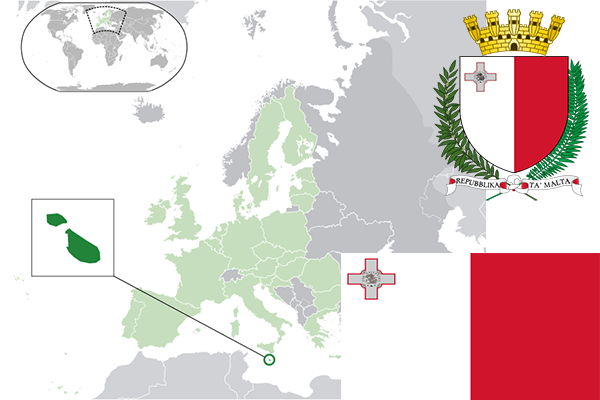

To`liq nomi: Malta Respublikasi
Region: Janubiy Yevropa
Qonunchilik shakli: Respublika
Mustaqillik kuni: 21-sentabr 1964-yil (Birlashgan Qirollikdan)
Poytaxt: Valletta
Maydoni: 316 km² (dunyoda 185 -o`rinda )
Chegaradosh davlatlari: yo`q
Aholisi: 445,426 (dunyoda 171 - o`rinda, 2014 -yil roʻyxat)
Aholi zichligi: 1 410/km²
Aholining o`rtacha yoshi: 79,25 yil (81,5 ayollar, 77,0 erkaklar)
Rasmiy tili: Malta va ingliz tili
Dini: Katolik
Pul birligi: Yevro
Telefon prefiksi: +356
Internet domen: .mt
Xalqaro tashkilotlarga a`zoligi: BMT (1964 – yildan), Yevropa Ittifoqi (2004-yildan)
Dengiz va okeanlarga chiqishi: O`rtayer dengizi
YIM: Butun: $ 18.404 mlrd, Jon boshiga $ 42,239 (2017 - yil roʻyxati)
Yirik shaharlari: Birkirkara